Orquestração do pipeline — Apache Airflow
DAG: airflow/dags/farmadata_pipeline.py · Airflow 2.10.5 · LocalExecutor · Docker (docker-compose.airflow.yml)
Todas as evidências desta página foram geradas no Docker (container farmadata_airflow), em 08/11/2026.
1. Grafo de dependências e agendamento
verificar_fonte_sngpc ──► extrair_sngpc ──► transformar_modelo_dimensional ──► validar_qualidade
| Task | Operador | O que faz |
|---|---|---|
verificar_fonte_sngpc |
Python | Confirma que o CSV do mês existe: arquivo local em FARMADATA_SNGPC_DIR ou HEAD na Anvisa. Ponto de injeção de falha. |
extrair_sngpc |
Bash | node scripts/carregar_sngpc.js com SNGPC_MESES=<mês do run> e SNGPC_FORCE=1. Carga idempotente por arquivo (DELETE + COPY na mesma transação). |
transformar_modelo_dimensional |
Python | aplicar_scd2_municipio() + carregar_fato_venda_medicamento() (sql/11 e sql/12). |
validar_qualidade |
Python | Regras de qualidade do mês. Se qualquer uma falhar, a task falha (ver tabela abaixo). |
Agendamento: @monthly, começando em 2020-01-01, sem data final. Cada run processa o mês dado por data_interval_start, então no dia 1º o scheduler processa o mês que acabou de fechar. A UI mostra a próxima execução agendada (Next Run ID: 2026-10-01, que processa outubro/2026).
Por que o grafo é linear e os runs não rodam em paralelo
- Cada etapa consome o que a anterior gravou, então não há duas tasks independentes que pudessem rodar ao mesmo tempo.
- max_active_runs=1: a carga SNGPC usa advisory lock, e a fato é recarregada com TRUNCATE + INSERT. Dois meses em paralelo ficariam esperando o lock ou um apagaria a fato do outro. No backfill, os meses rodam em série (ver 4).
- catchup=False: ligar a DAG roda só o mês mais recente. O histórico só é reprocessado por backfill explícito.
Regras de validar_qualidade
| Regra | Pega o quê |
|---|---|
arquivo do mês registrado em carga_arquivo |
carga que não chegou a commitar |
| o arquivo do mês trouxe vendas | CSV vazio/truncado |
| fato do mês = vendas do mês | vendas perdidas no join temporal SCD2 |
fato total = venda_medicamento total |
fato desatualizada |
toda venda está na versão SCD2 vigente na data_venda |
join temporal errado |
quantidade_vendida > 0 |
métrica inválida |
| no máximo 1 versão corrente por município | SCD2 corrompido |
| Grafo | 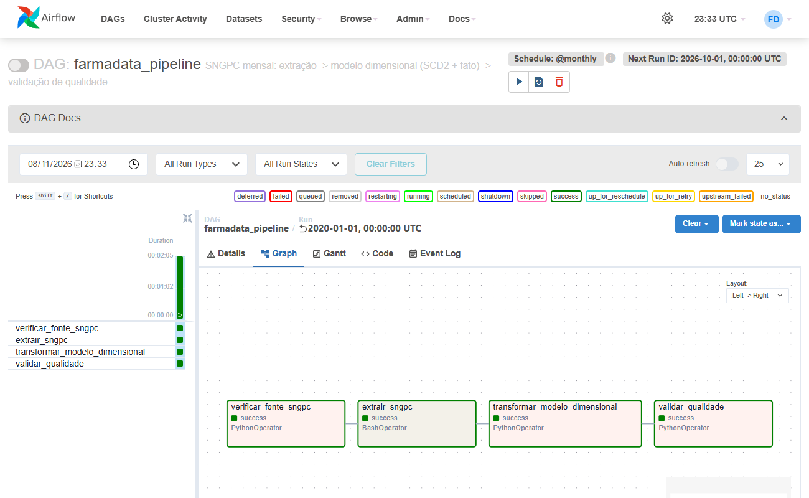 |
Agendamento ativo (@monthly, próxima execução) |
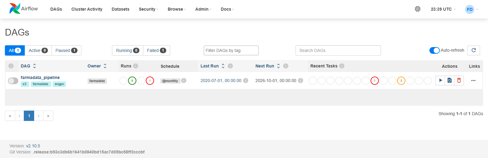 |
2. Tolerância a falhas
default_args = {
"retries": 3, # >= 2; até 4 tentativas
"retry_delay": timedelta(seconds=20), # base do backoff
"retry_exponential_backoff": True, # ~20s, ~40s, ~80s (+ jitter do Airflow)
"max_retry_delay": timedelta(minutes=10), # teto
"on_retry_callback": alerta_retry,
"on_failure_callback": alerta_falha,
}
Alerta: os dois callbacks registram um JSON com nível (RETRY/FALHA), task, run, mês, tentativa, horário da próxima tentativa e erro. Esse JSON vai para o log da task ([ALERTA RETRY] / [ALERTA FALHA]) e para $AIRFLOW_HOME/alertas_farmadata.jsonl. Num ambiente de produção, é aqui que entraria o envio por e-mail ou Slack. Aqui o destino é um arquivo, para que cada disparo possa ser conferido: logs/alertas_farmadata.jsonl.
Injeção de falha: a Airflow Variable farmadata_falha_injetada faz verificar_fonte_sngpc falhar de propósito nas N primeiras tentativas, simulando a fonte da Anvisa fora do ar:
{"task_id": "verificar_fonte_sngpc", "falhas": 2, "mes": "202001"}
A chave mes é opcional e restringe a falha a um único mês. Para desligar a injeção, basta apagar a Variable.
As esperas não dobram exatamente porque o Airflow sorteia cada uma dentro de uma faixa que dobra a cada tentativa: [20 s, 40 s), [40 s, 80 s), [80 s, 160 s).
3. Evidência — retry com recuperação (falha injetada)
airflow dags backfill farmadata_pipeline -s 2020-01-01 -e 2020-01-01, com {"falhas": 2, "mes": "202001"}:
| Tentativa | Início (UTC) | Resultado | Próxima tentativa agendada | Espera |
|---|---|---|---|---|
| 1 | 23:30:31 | falha injetada → UP_FOR_RETRY + alerta |
23:31:10 | 39 s |
| 2 | 23:31:11 | falha injetada → UP_FOR_RETRY + alerta |
23:32:30 | 79 s |
| 3 | 23:32:30 | sucesso; downstream roda e o run termina success |
— | — |
A espera praticamente dobra (39 s → 79 s), como esperado do backoff exponencial. As tasks downstream só começaram depois do sucesso da tentativa 3.
[23:30:31] INFO - Starting attempt 1 of 4
AirflowException: [FALHA INJETADA] fonte SNGPC indisponível (simulação de HTTP 503) — tentativa 1/2 programada para falhar
[23:30:31] INFO - Marking task as UP_FOR_RETRY. ... task_id=verificar_fonte_sngpc, run_id=backfill__2020-01-01T00:00:00+00:00
[23:30:31] WARNING - [ALERTA RETRY] {"nivel": "RETRY", ..., "tentativa": 1, "max_tentativas": 4, "proxima_tentativa_em": "2026-11-08T23:31:10+00:00", ...}
[23:31:11] INFO - Starting attempt 2 of 4
[23:31:11] INFO - Marking task as UP_FOR_RETRY. ...
[23:31:11] WARNING - [ALERTA RETRY] {..., "tentativa": 2, ..., "proxima_tentativa_em": "2026-11-08T23:32:30+00:00", ...}
[23:32:30] INFO - Starting attempt 3 of 4
[23:32:30] INFO - [FALHA INJETADA] tentativa 3 > 2 falhas programadas: seguindo normalmente
[23:32:30] INFO - Marking task as SUCCESS. ...
Durante o retry: tentativas 1 e 2 falhadas, task up_for_retry, log com [ALERTA RETRY] |
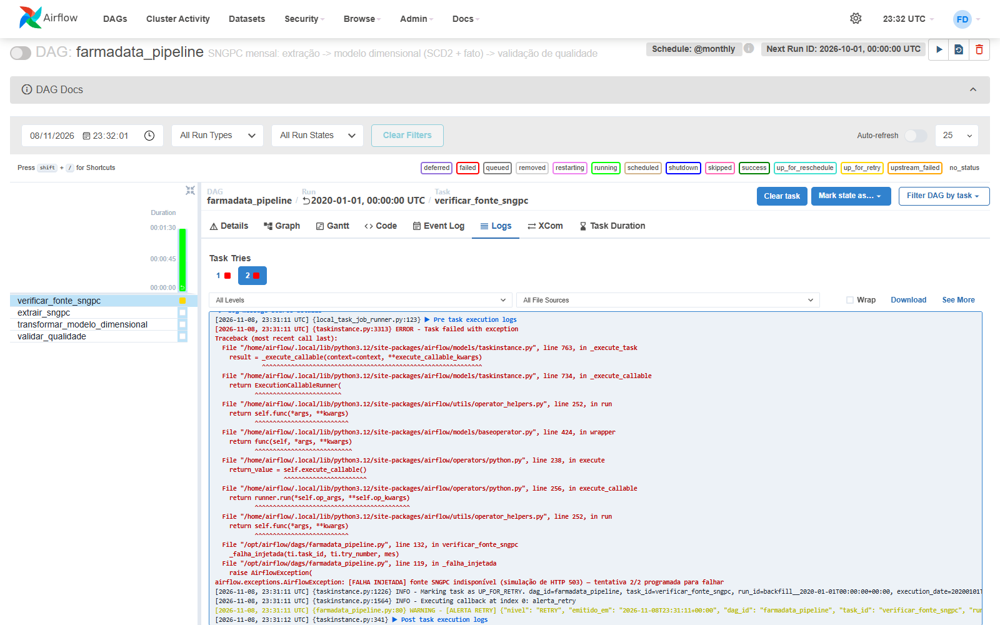 |
| Recuperação: tentativas 1 e 2 em vermelho, 3 em verde | 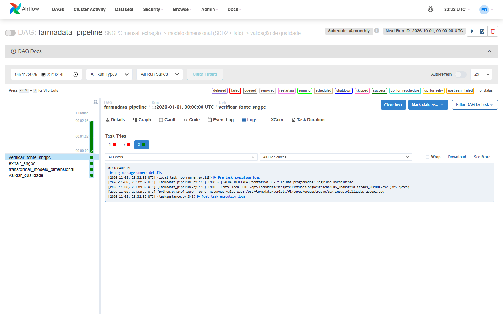 |
| Gantt: intervalos crescentes entre tentativas, downstream só depois do sucesso | 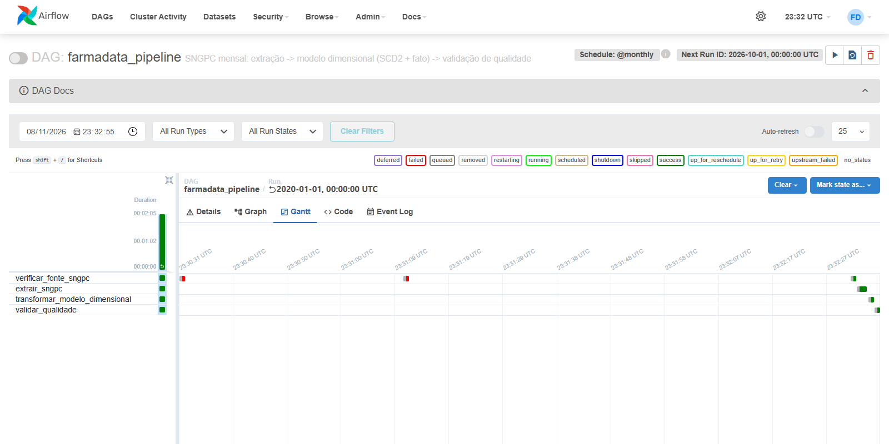 |
Logs: logs/retry_202001_cli.txt (saída da CLI) e logs/retry_202001/ (cada tentativa).
4. Evidência — backfill histórico (jan–jun/2020)
airflow dags backfill farmadata_pipeline -s 2020-01-01 -e 2020-06-01 --reset-dagruns -y
- Reprocessamento: janeiro já tinha sido carregado no teste da seção 3, e o
--reset-dagrunso reprocessou junto com os demais. Por isso o run de janeiro aparece com a tentativa 4 emverificar_fonte_sngpc, depois das 3 da seção 3. - Retry dentro do backfill: a Variable foi configurada com
{"falhas": 1, "mes": "202003"}. A tentativa 1 de março falhou. O backfill esperou 24 s sem adiantar abril, e a tentativa 2 passou. Por isso esse run levou 30 s, contra 4–5 s dos demais. - Resultado: 6 runs
success(finished run 6 of 6 | succeeded: 24 | failed: 0, exit 0), em série: cada mês começa só depois que o anterior termina. - Sem duplicação: janeiro foi carregado 2 vezes e continua com 4 vendas. A fato bate com
venda_medicamentoem todos os meses:
id_periodo | vendas | fato | qtd
202001 | 4 | 4 | 69.000
202002 | 4 | 4 | 73.000
202003 | 4 | 4 | 77.000
202004 | 5 | 5 | 85.000
202005 | 5 | 5 | 90.000
202006 | 5 | 5 | 95.000
| Grid: runs de backfill (jan–jun em verde; jul é o teste da seção 5) | 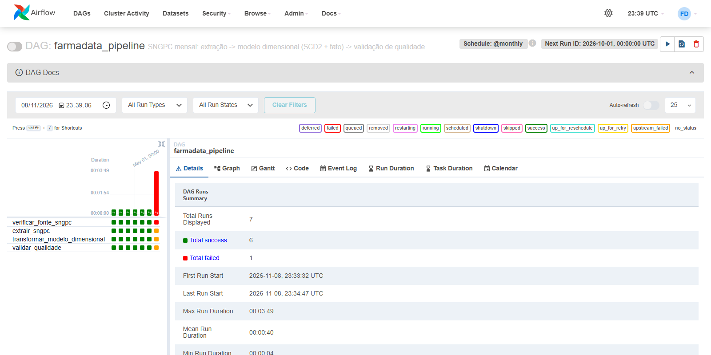 |
| Lista de DAG runs: Run Type = backfill, um mês depois do outro | 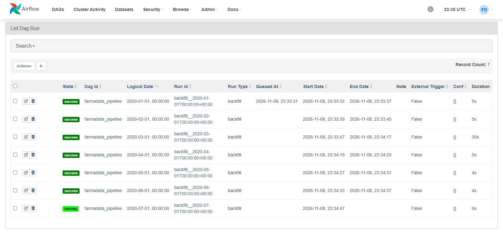 |
| Retry no mês 202003 dentro do backfill | 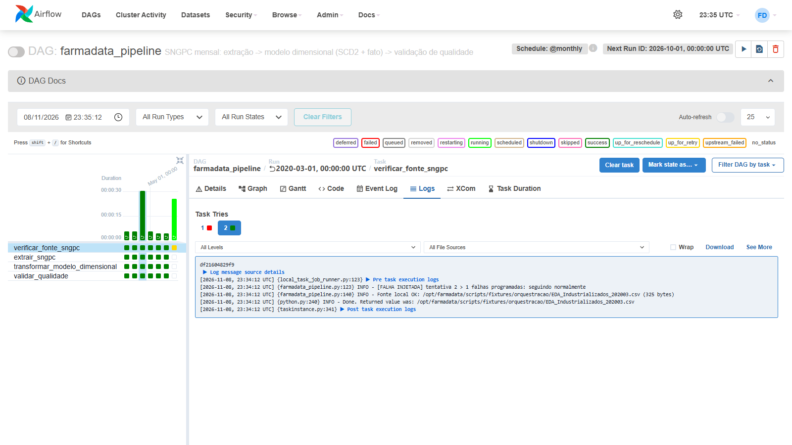 |
| Validação de qualidade de 202003 | 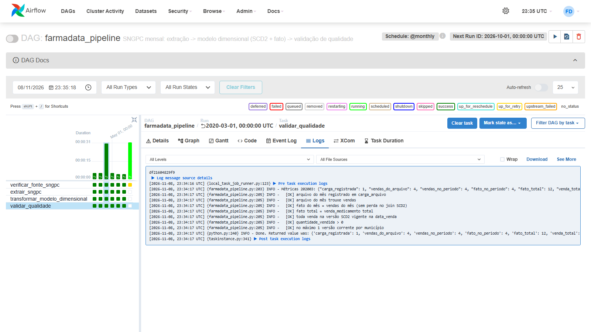 |
Arquivos:
- logs/backfill_cli.txt: saída completa da CLI.
- logs/backfill_202003/: logs por task e tentativa do mês com retry.
- logs/estado_pos_backfill.txt: list-runs, tentativas por task instance, carga_arquivo, contagens venda × fato e a confirmação de que o banco farmadata não foi tocado.
5. Evidência — falha definitiva (retries esgotados + alerta de falha)
Este caso não usa injeção. airflow dags backfill ... -s 2020-07-01 -e 2020-07-01 pede o mês 202007, cujo CSV não existe na fonte:
| Tentativa | Alerta (UTC) | Próxima tentativa | Espera |
|---|---|---|---|
| 1 | RETRY 23:34:48 |
23:35:14 | 26 s |
| 2 | RETRY 23:35:15 |
23:36:06 | 51 s |
| 3 | RETRY 23:36:07 |
23:38:35 | 148 s |
| 4 | FALHA 23:38:36 |
— | — |
Depois disso, extrair_sngpc, transformar_modelo_dimensional e validar_qualidade ficaram upstream_failed. Nenhuma carga parcial foi feita, e o backfill terminou com BackfillUnfinished: Some task instances failed (exit 1).
4 tentativas em vermelho; log da última com [ALERTA FALHA] |
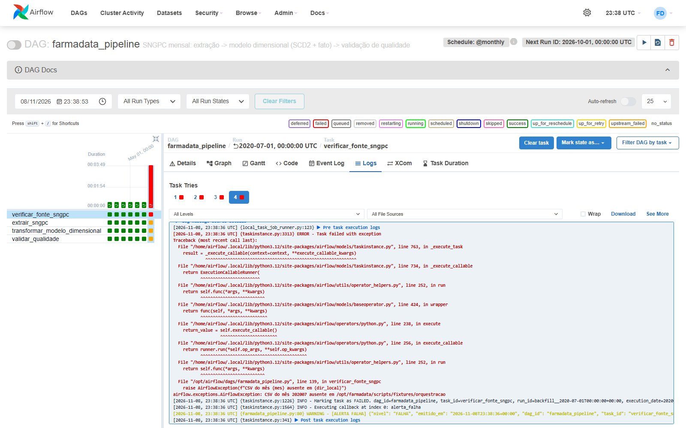 |
| Gantt das 4 tentativas | 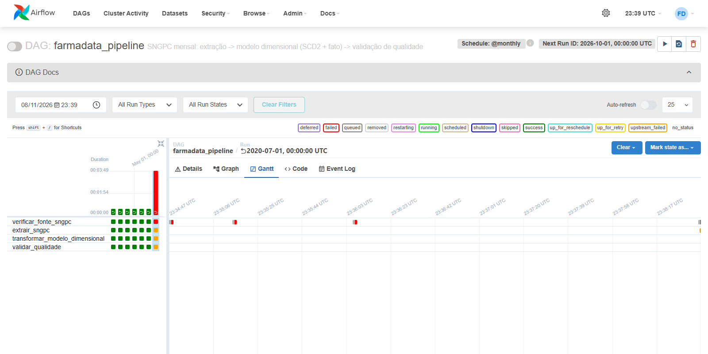 |
Logs: logs/falha_definitiva_202007_cli.txt e logs/falha_definitiva_202007/.
6. Como reproduzir (Docker)
make airflow-demo # cria o banco de testes farmadata_orquestracao e sobe db + Airflow com as fixtures
A UI fica em http://localhost:8080, com usuário admin e senha admin (credenciais de desenvolvimento). Os testes desta página, na ordem:
make airflow-falha FALHAS=2 # injeção (para restringir a um mês: Variable com "mes")
make airflow-backfill INICIO=2020-01-01 FIM=2020-01-01 # retry com recuperação
make airflow-sem-falha
make airflow-backfill INICIO=2020-01-01 FIM=2020-06-01 EXTRA="--reset-dagruns -y" # backfill histórico, reprocessando jan
make airflow-backfill INICIO=2020-07-01 FIM=2020-07-01 # falha definitiva (sem CSV de julho)
Sem make, os comandos equivalentes são:
bash airflow/preparar_banco_demo.sh
MSYS_NO_PATHCONV=1 FARMADATA_DB=farmadata_orquestracao FARMADATA_SNGPC_DIR=/opt/farmadata/scripts/fixtures/orquestracao docker compose -f docker-compose.yml -f docker-compose.airflow.yml up -d --build db airflow
docker compose -f docker-compose.yml -f docker-compose.airflow.yml exec airflow airflow dags backfill farmadata_pipeline -s 2020-01-01 -e 2020-06-01
No Windows com Git Bash, o MSYS_NO_PATHCONV=1 é necessário. Sem ele, o Git Bash reescreve /opt/... como C:/Program Files/Git/opt/....
Para usar os dados reais, rode make airflow-up. Ele aponta para o banco farmadata e baixa os CSVs da Anvisa para tmp/.
Há também um script sem Docker, para Linux/WSL sem root: airflow/local/airflow_local.sh.
7. Escopo da evidência
- As execuções usaram as fixtures
scripts/fixtures/orquestracao/(de 4 a 5 dispensações por mês), num banco de testes separado (farmadata_orquestracao), e não os CSVs completos da Anvisa (centenas de MB por mês). O código executado é o mesmo que roda com os dados reais. Mudam apenasFARMADATA_SNGPC_DIReFARMADATA_DB.